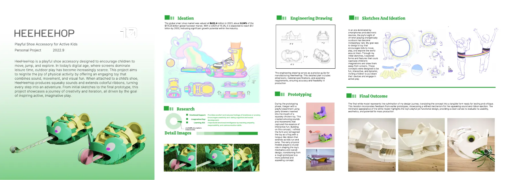

简介和过程
我先做了个快速实验，把派对吹龙塞进会叫的玩具鸡里，得到声音和动作；再把它改成一只青蛙，孩子跑跳时彩带会伸出来。早期的实体模型决定了机构怎么做，之后我画了工程图，做了最终白模。它没有上市，也没有测过对孩子行为的影响。


让孩子多去户外跑跳的趣味鞋饰：一只青蛙，孩子跑跳时，它会像吐舌头一样弹出彩带。
我先做了个快速实验，把派对吹龙塞进会叫的玩具鸡里，得到声音和动作；再把它改成一只青蛙，孩子跑跳时彩带会伸出来。早期的实体模型决定了机构怎么做，之后我画了工程图，做了最终白模。它没有上市，也没有测过对孩子行为的影响。
